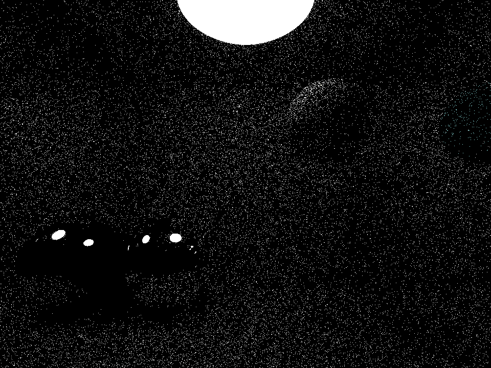
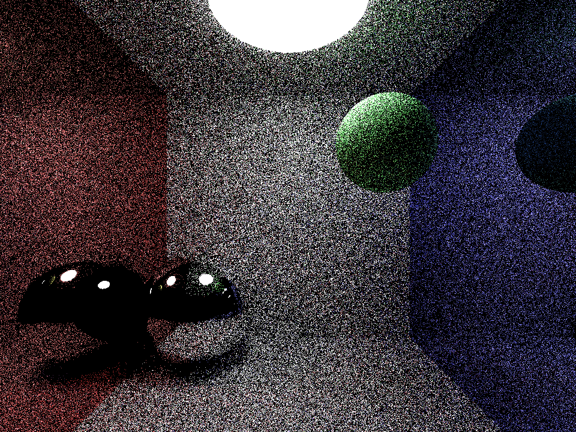
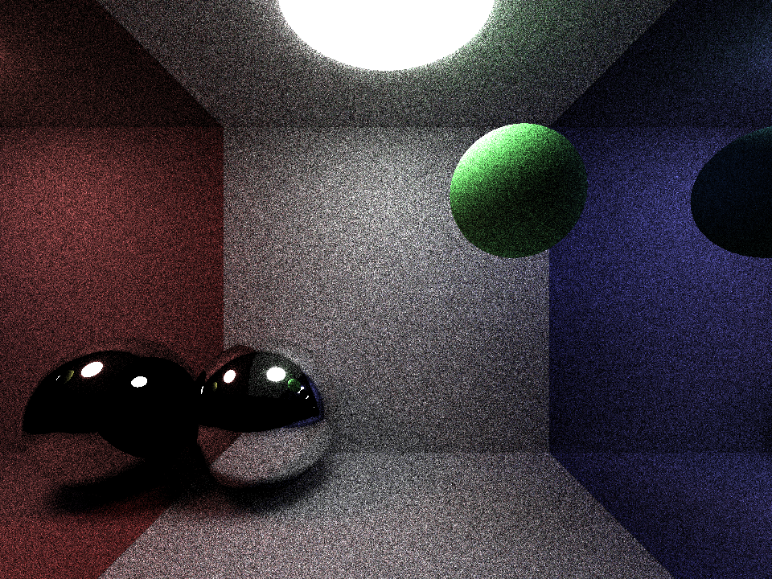

Hi there! I am Daniel Li, known online as FallingSky65. I'm a senior at Montgomery Blair High School with a passion for graphics programming. Here are some of my selected projects (for the MIT Maker portfolio):
This is a path tracer program I wrote in 2023, before I began to use GitHub regularly. The original code is unchanged from when I last updated it on September 4, 2023. You can find the source now on GitHub.
This program renders a simple scene by simulating photon interactions with surfaces, with each intersection reflecting and accumulating colored light. The code is run entirely on a single CPU thread and the program stores the results for 1/10/50/100 photons per pixel, and displays the final result in a new window.
Here are the results, each image is 960x720 pixels, and every photon is capped at 4 bounces in the scene.



I've built a series of fluid simulations through which I learned and implmented many graphics programming and parallel computing algorithms.